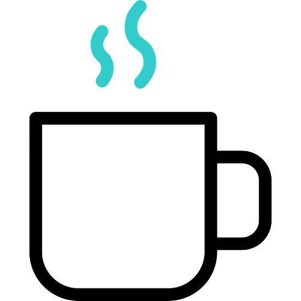

Engenharia de Software e gestão de times ageis
A gestão de times ageis é um ramo da ciencia
da administração que trata do planejamento
e controle de projetos.
Logica de Programação
Lógica de programação é a organização coesa
de uma sequência de instruções voltadas à
resolução de um problema, ou à criação de
um software ou aplicação.
Desenvolvimento Pessoal e trabalhabilidade
O conceito de desenvolvimento pessoal e trabalhabilidade
vem da capacidade do profissional evoluir seus métodos,
de produzir e gerar valor para si ou para outros, como
resultado de suas próprias habilidades.
Matemática Aplicada
A matemática pode ser incorporada no aprendizado de programação
através de operações que envolvam comparações de dados,
estruturas condicionais, repetições, entre muitas outras
Design Centrado no Ser Humano
Entende-se como um processo de projeto que visa criar as formas
e funções dos objetos,produtos, e serviços de uso, de forma a torna-los adequados as
necessidades de seus usuários.